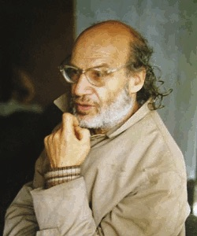

Alexandre Grothendieck (28 mars 1928 [Berlin] - 13 novembre 2014 [Saint-Girons])
Alexander Grothendieck est né le 28 mars 1928 à Berlin d'un père anarchiste russe, tué par les nazis, et d'une mère femme de lettres, réfugiée en France. Il passe sa licence à la faculté des sciences de Montpellier, puis étudie une année en 1948-1949 à l'École Normale Supérieure à Paris, avant de partir en 1949 à l'université de Nancy. Il y devient l'élève, en analyse fonctionnelle, de Schwartz et Dieudonné. Ce dernier le trouve un peu prétentieux, et lui propose de travailler sur des questions que ni Schwartz, ni lui n'ont su résoudre. Voilà ce qu'en dit Schwartz dans son autobiographie :
Dieudonné, avec l'agressivité (toujours passagère), dont il était capable, lui passa un savon mémorable, arguant qu'on ne devait pas travailler de cette manière, en généralisant pour le plaisir de généraliser. [...]
L'article s'achevait sur 14 questions, des problèmes que nous n'avions pas su résoudre, Dieudonné et moi. Dieudonné lui [Grothendieck] proposa de réfléchir à certains d'entre eux qu'il choisirait. Nous ne le revîmes plus de quelques semaines. Lorsqu'il réapparut, il avait trouvé la solution de la moitié d'entre eux !
Rapidement, Grothendieck rédige sa thèse intitulée Produits tensoriels topologiques et espaces nucléaires, et il devient un éminent spécialiste de la théorie des espaces vectoriels topologiques, domaine alors très en vogue. Il est aussi coopté comme membre du célèbre groupe Bourbaki auprès de ses aînés. Il est confronté à la nécessité de trouver un poste dans la recherche. Apatride, il ne peut accéder à un poste dans la fonction publique française, et il ne désire pas se faire naturaliser car il refuse de faire son service militaire. Il part alors enseigner à Sao Paulo, à Lawrence (dans l'état du Kansas, aux États-Unis), à Chicago.
Au début des années 1960, il obtient une charge au tout récent Institut des Hautes Études Scientifiques (IHES), institut nouvellement créé par l'homme d'affaires et mathématicien Léon Motchane sur le modèle de l'Institute for Advanced Study (IAS) de Princeton. Il s'oriente vers la géométrie algébrique. Il y réalise des travaux gigantesques, qui révolutionnèrent la discipline, et qui lui valent la médaille Fields en 1966. Toutefois, Grothendieck refuse de se rendre en URSS pour la recevoir, afin de protester contre la répression de l'insurrection hongroise en 1956. On la lui remet plus tard, mais il l'offre au Viêt-nam, afin qu'il utilise son or. Il y enseigne d'ailleurs plusieurs semaines sous les bombardements américains.
Vers la fin des années 60, Grothendieck, qui a perdu l'habitude de rédiger (son séminaire a été rédigé des années durant par Dieudonné), devient de moins en moins clair. Il ne pardonnera jamais aux autres mathématiciens de ne pas le comprendre et de "dénaturer" ainsi ses idées. Si ses relations avec la communauté mathématique n'avaient jamais été faciles (il travaillait énormément en solitaire, ses journées faisaient 27 ou 28H, de sorte que parfois il lui arrivait de se décaler - il méprisait légèrement Dieudonné, séquelle du premier coup de gueule de ce dernier - ses prises de becs avec Weil causèrent son départ de Bourbaki...), elles sont plus tendues que jamais... Il abandonne peu à peu les mathématiques, pour se consacrer à ses autres convictions. En 1970, il fonde avec deux autres mathématiciens, Claude Chevalley et Pierre Samuel, le groupe Survivre et Vivre, pacifiste et écologiste. A la même époque, il découvre que l'IHES est partiellement financé par le Ministère de la Défense. Il quitte l'institut, d'abord pour le Collège de France, puis pour l'Université de Montpellier (il a été naturalisé en 1971), avant de terminer sa carrière au CNRS de 1984 à 1988. Il s'est alors retiré dans sa maison de Lasserre, dans les Pyrénées ariégeoises, où il vécut quasiment en ermite jusqu'à sa mort.
Grothendieck a écrit en 1985 une sorte d'autobiographie, Récoltes et semailles, sous-titré "Réflexions et témoignage sur un passé de mathématicien" que l'on a pu trouver pendant un long moment sur Internet afin qu'elle soit finalement publiée par Gallimard en 2022. Elle contient de nombreuses attaques contre la communauté des mathématiciens. Un témoignage intéressant concernant la vie de Grothendieck est la correspondance Serre-Grothendieck publiée en complément des oeuvres complètes de Jean-Pierre Serre.